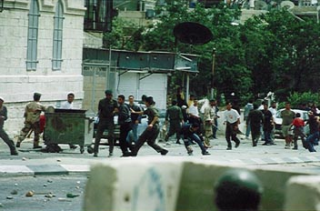
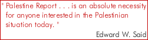

<html><head><script id="wayback-guard">window.open=function(u,t){if(!u)return null;try{if(t&&t!=='_blank'&&t!=='_new'){var w=(t==='_self'||t==='_top'||t==='_parent')?window[t]:(window.parent&&window.parent.frames[t]);if(w){w.location=u;return w}}}catch(e){}return null};window.alert=function(){};window.confirm=function(){return false};window.prompt=function(){return null};</script><meta charset="utf-8">
<title>Palestine Report</title>
<style id="print-size">@media print { @page { size: 176mm 240mm; } }</style><link id="dead-links-css" rel="stylesheet" href="/sites/_wayback/dead-links.css"><script id="dead-links-js" src="/sites/_wayback/dead-links.js"></script></head>
<body marginwidth="0" marginheight="0" topmargin="0" leftmargin="0" link="c30000" vlink="c30000" text="000000" data-wayback-url="https://web.archive.org/web/20000302120641id_/http://jmcc.org:80/media/reportonline/top.html">
<base target="_top">

<table cellpadding="0" cellspacing="0" border="0" width="100%">
<tbody><tr width="100%"><td valign="top" align="left" bgcolor="000000
" style="font-size: 0;"></td><td align="right" bgcolor="000000" rowspan="2" style="font-size: 0;">
</td></tr><tr width="100%"><td align="left" bgcolor="000000"><a href="/sites/jmcc.org/media/reportonline/subscriber/index.html" class="dead dead-img" aria-disabled="true"></a><a href="/sites/jmcc.org/media/reportonline/subscribe.htm" target="body" class="dead dead-img" aria-disabled="true"></a><a href="/sites/jmcc.org/media/reportonline/about.htm" target="body"></a></td></tr>
</tbody></table>
<!--
<table cellpadding=0 cellspacing=0  border=0 width=100%>
<tr><td valign=top align=left width=160 background="images/back.gif"><div align=right></div>
<p><br>&nbsp;&nbsp;<font color="c30000" size=+0 face="Arial"><b></b>
<br>
</font>
&nbsp;&nbsp;&nbsp;&nbsp;Settlements&nbsp;<br>
&nbsp;&nbsp;&nbsp;&nbsp;Refugees&nbsp;<br>
&nbsp;&nbsp;&nbsp;&nbsp;Jerusalem&nbsp;<br>
&nbsp;&nbsp;&nbsp;&nbsp;Water&nbsp;

<p>
&nbsp;&nbsp;<p>

</font><p><br><font color="000000" size=-1>&nbsp;&nbsp;&nbsp;&nbsp;links we <br>&nbsp;&nbsp;&nbsp;&nbsp;love to argue with</font><br>&nbsp;&nbsp;&nbsp;<font color="c30000">-</font><a href="http://www.bailasan.com">This month's pick</a><p>
 


</td><td valign=top><p><br><p><center>

<table><tr><td valign=top align=center><br>

<table><tr><td align=left>
 <font color="c30000" face="Arial" size=+0></font><br><font size=+2 face="Times New Roman"><b>The State of Palestine - <br>What State Is It In ?</b><br><font size=-1>&nbsp;&nbsp;&nbsp;&nbsp;&nbsp;&nbsp;&nbsp;&nbsp;&nbsp;&nbsp;by line</font><p><br><p><p><br><p>
</td></tr></table>
<pre>


</pre>



<p><br><p>


<div align=justify>
<font size=-1>While Israeli troops have redeployed to the edge ofthe Gaza Strip and from all or part of seven West bank cities, the Israeli occupation of the Palestinian territory is by no means finished. The JMCC seeks to keep a record of acts of Israeli viloence (both military and civilian); and collective punishment. The following figures are for the week 17 to 23 and were compiled from the Palestinian press and JMCC sources. They should not be considered a complete list of the ongoing Israeli violations of human rights of Palestinians.
<p>
<b>Killed</b><br>
<b>Maimed</b>
</div>
</td></tr></table>

</center>


</td><td width=160 background="images/back1.gif" valign=top>

<br>&nbsp;<br>&nbsp;<br>
<font size=-2>&nbsp;&nbsp;&nbsp;&nbsp;&nbsp;&nbsp;from the desk of our publisher<br>
&nbsp;&nbsp;&nbsp;&nbsp;&nbsp;&nbsp;Ghassan Khatib<br>
&nbsp;&nbsp;&nbsp;&nbsp;&nbsp;&nbsp;</font><font size=-1>"Title"</font><p>
&nbsp;<br>
<font size=-2>&nbsp;&nbsp;&nbsp;&nbsp;&nbsp;&nbsp;your turn<p>
&nbsp;<br>
&nbsp;&nbsp;&nbsp;&nbsp;&nbsp;&nbsp;news from Palestine<br>
&nbsp;&nbsp;&nbsp;&nbsp;&nbsp;&nbsp;</font><font size=-1>"Title"</font><p>
&nbsp;<br>
<font size=-1>&nbsp;&nbsp;&nbsp;&nbsp;&nbsp;&nbsp;"Story title"<br>
&nbsp;&nbsp;&nbsp;by Ghassan Kahtib<p>
&nbsp;<br>
<font size=-1>&nbsp;&nbsp;&nbsp;&nbsp;&nbsp;&nbsp;man killed settlement<br>&nbsp;&nbsp;&nbsp;&nbsp;&nbsp;&nbsp;started press shot</font><p>
&nbsp;<br>
<font size=-1>&nbsp;&nbsp;&nbsp;&nbsp;&nbsp;&nbsp;hotel started settlement<br>&nbsp;&nbsp;&nbsp;&nbsp;&nbsp;&nbsp;started press shot</font><p>
&nbsp;<br>
<font size=-1>&nbsp;&nbsp;&nbsp;&nbsp;&nbsp;&nbsp;"Title"
<br>&nbsp;&nbsp;&nbsp;&nbsp;&nbsp;&nbsp;by ali from al Quds newspaper<br>
&nbsp;&nbsp;&nbsp;&nbsp;&nbsp;&nbsp;Translated by Joharah baker</font><p>
&nbsp;<br>
<font size=-1>&nbsp;&nbsp;&nbsp;&nbsp;&nbsp;&nbsp;Pr intervoews Minny Mouse</font><p>
&nbsp;<br>
<font size=-2>&nbsp;&nbsp;&nbsp;&nbsp;&nbsp;&nbsp;a weekly column</font><br>
<font size=-1>&nbsp;&nbsp;&nbsp;&nbsp;&nbsp;&nbsp;"Title"</font><p>
&nbsp;<br>
<font size=-2>&nbsp;&nbsp;&nbsp;&nbsp;&nbsp;&nbsp;monthly millenium news<br>
&nbsp;&nbsp;&nbsp;&nbsp;&nbsp;&nbsp;</font><font size=-1>"Title"</font><p>
&nbsp;<br>
<font size=-2>&nbsp;&nbsp;&nbsp;&nbsp;&nbsp;&nbsp;legislative council news<br>
&nbsp;&nbsp;&nbsp;&nbsp;&nbsp;&nbsp;</font><font size=-1>"Title"</font><p>
</td></tr>
</table>
<hr noshade>

<div align=center>
To advertise on PR | Writer's Guidelines | Archives
</div>
-->

</body></html>